CharaRig 操作説明書
マネキンでポーズを決める、自作キャラのゲーム素材工房
自作キャラのイラストから、ゲーム用の素材（設定画・4方向の立ち絵・歩行・行動モーション・イベント画像）を段階的に作るツールです。 手足の位置や向きは、文章ではなくマネキン（灰色の人形）で指定します。 画像の生成には Google の画像生成AI（Gemini）を使います。生成結果は「手直し前提の下書き」として使ってください。
- 対象バージョン: 1.0.0
- 対応: Windows 10 / 11（64bit）。インターネット接続が必要です
- 対象: 18歳以上の方
- 無料版との違いは「無料版について」を参照してください
1. はじめに（初回起動とAPIキーの設定）
1.1 ご利用にあたっての同意
初めて起動すると「ご利用にあたって」が表示されます。内容を確認し、「18歳以上であり、上記および利用規約に同意します」にチェックを入れて「同意して開始」を押してください。主な内容は次のとおりです。
- 生成には、ご自身で取得した Google AI Studio の APIキー（または Vertex AI の設定）が必要です
- 無料枠のAPIキーでは、送ったプロンプトと画像がGoogleのサービス改善に使われ、人が確認することがあります（有料枠・Vertex AI では使われません）
- 入力する写真・イラストは、ご自身が権利を持つもの、または使用の許可を得たものに限ってください
- 性的・暴力的・差別的な内容や、実在の人物を偽る内容の生成は禁止されています。不適切な生成を繰り返すと、ご自身のAPIキーやGoogleアカウントが制限されることがあります
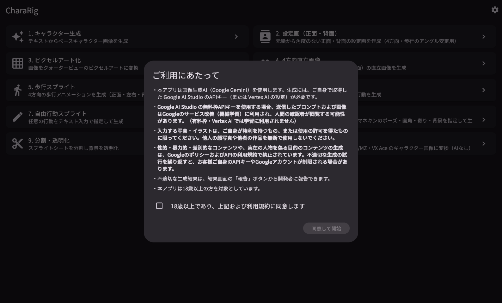
同じ内容は、あとから設定画面の「利用上の注意」でも確認できます。
1.2 APIキーの設定
- Google AI Studio（https://aistudio.google.com/apikey）でAPIキーを取得します（無料・約5分。手順は「付録. APIキーの取得」）
- ホーム画面右上の ⚙️ で設定画面を開きます（APIキーが未設定なら、起動時に「設定へ」の案内も出ます）
- 「接続先」が Gemini API (AI Studio) になっていることを確認し、「APIキー」欄に貼り付けます
- 右上の「保存」を押します
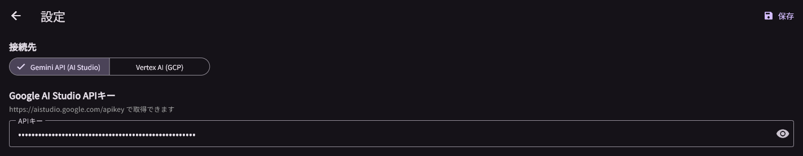
ベースURL・モデル名は、通常は変更不要です。
欧州（EEA）・英国・スイスでは、Gemini の無料枠が使えません。有料のAPIキーを用意してください。
2. 画面の基本操作
2.1 ホーム画面
10個の機能が並んでいます。クリックするとその機能の画面が開きます。
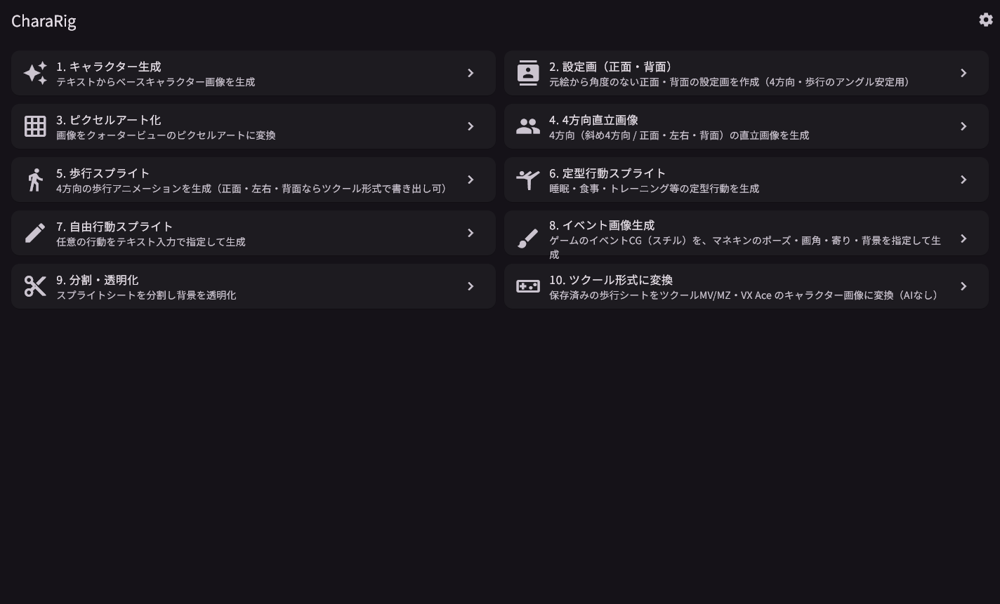
| 番号 | 機能 | AI |
|---|---|---|
| 1 | キャラクター生成 | 使う |
| 2 | 設定画（正面・背面） | 使う |
| 3 | ピクセルアート化 | 使う |
| 4 | 4方向直立画像 | 使う |
| 5 | 歩行スプライト | 使う |
| 6 | 定型行動スプライト | 使う |
| 7 | 自由行動スプライト | 使う |
| 8 | イベント画像生成 | 使う |
| 9 | 分割・透明化 | 使わない |
| 10 | ツクール形式に変換 | 使わない |
2.2 画面の並び
ウィンドウの幅が十分にあると（横 1100 以上）、各機能の画面は 左に入力（設定と生成ボタン）、右に結果 の2列になり、それぞれ別にスクロールします。ウィンドウを狭くすると、入力の下に結果が並ぶ1列になります。起動時のウィンドウは 1440×900（画面が小さければ画面に収まる大きさ）です。
2.3 画面右上のボタン
| ボタン | 内容 |
|---|---|
| 🏠 ホーム | ホーム画面に戻ります（未保存の結果があれば確認が出ます） |
| ⚙️ 設定 | 設定画面を開きます |
| 通常／高品質 | 画像生成に「高品質モデル」を使うかを切り替えます（設定画面で高品質モデルを指定したときだけ使えます。料金は高めです） |
| 接続先の切り替え | Gemini API と Vertex AI の両方を設定したときだけ表示されます |
| スタイル | 画風（5.1）を切り替えます。設定画・4方向・歩行・定型行動・自由行動・イベント画像の画面にあります |
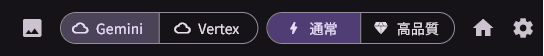
2.4 画像の読み込み
画像の欄（「元絵」など）には、次のどれかで画像を入れます。
- 欄をクリックしてファイルを選ぶ
- 画像ファイルを欄にドラッグ＆ドロップする（欄以外の場所に落とすと、その画面の元絵の欄に入ります）
- 画像をコピーしてから「クリップボードから貼り付け」、または Ctrl+V
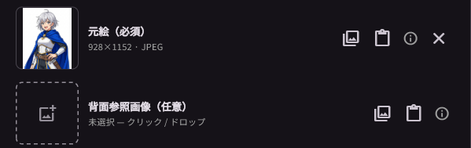
2.5 生成結果の操作
生成が終わると、結果の下に次のボタンが出ます。
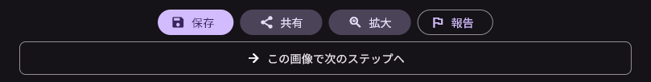
| ボタン | 内容 |
|---|---|
| 保存 | 保存先フォルダに保存します（ファイル名の先頭に日時が付きます）。保存すると「保存済み」になります |
| 共有 | 他のアプリに画像を渡します |
| 拡大 | 大きく表示します |
| 報告 | 不適切な結果を開発者に報告します（8.2） |
| この画像で次のステップへ | 結果を自動で保存してから、選んだ機能の画面に画像を引き継ぎます |
- 未保存の結果があるまま生成し直したり画面を離れたりすると、「保存して実行／保存せず実行／キャンセル」の確認が出ます
- 生成中は「キャンセル」で止められます
- 保存先の既定は「ピクチャ\CharaRig」です（設定画面で変更できます）
3. おすすめの作り方
3.1 キャラクターのスプライト一式を作る
（1. キャラクター生成 または 手持ちのイラスト）
→ 2. 設定画（正面・背面）
→ 4. 4方向直立画像
→ 5. 歩行スプライト
→ 6. 定型行動 / 7. 自由行動- 設定画を先に作るのがおすすめです。 設定画は角度のない正面・背面の絵で、これを使うと元絵の角度やポーズに引っ張られにくくなります
- 作った設定画は、アプリを閉じるまで、4方向・歩行・ピクセルアート化・行動・イベント画像の各画面で自動的に使われます
3.2 ツクール・ウディタ用の歩行グラフィックを作る
- 4方向直立画像または歩行スプライトの画面で、「向き」を 正面・左右・背面（ツクール向け） にする（両画面で共通の設定です）
- 歩行スプライトを生成する
- 結果の下の「ツクール形式で書き出し」を押し、1コマの大きさを選んで保存する
- ツクールのプロジェクトの
img/charactersフォルダに保存する
4. 各機能の使い方
4.1 キャラクター生成
文章からキャラクターの画像を作ります。
- 「キャラクターの説明」を入力（例: 青い髪の女性エルフ、魔法使いの衣装、杖を持っている）
- 「生成」を押す
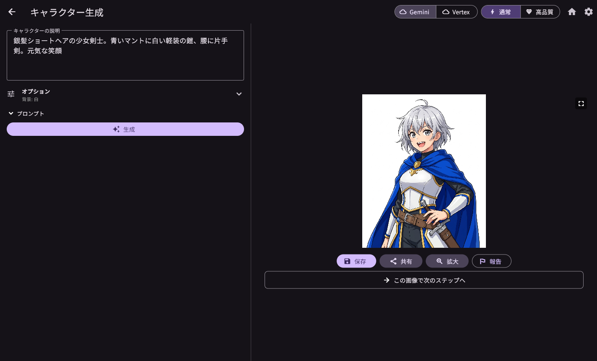
4.2 設定画（正面・背面）
元絵から、角度のない真正面・真後ろの設定画（左=正面、右=背面の1枚）を作ります。
- 「元絵（必須）」を入れる。背中の作りが分かる画像があれば「背面参照画像（任意）」にも入れる
- 必要なら「画風見本」（5.6）や解像度（標準 / 2K / 4K）を選ぶ
- 「設定画を生成」を押す
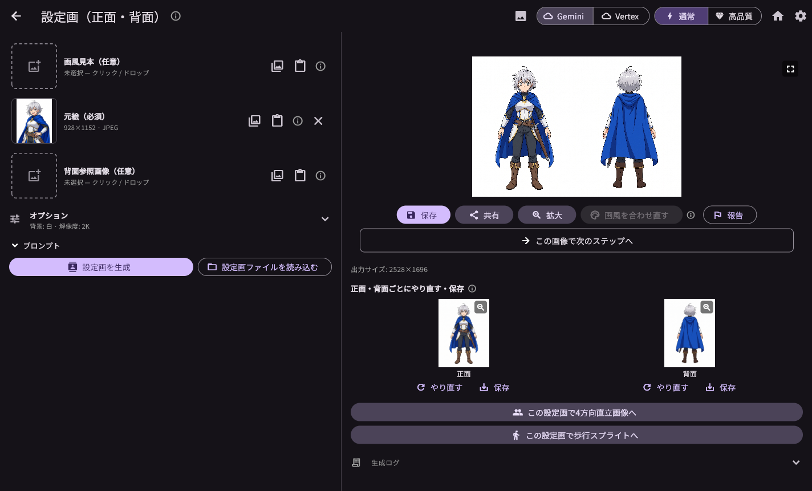
- 「正面・背面ごとにやり直す・保存」で、片側だけを追加の指示付きで作り直せます（例: リボンを左側に / 背中の編み上げを描く）
- 「この設定画で4方向直立画像へ」「この設定画で歩行スプライトへ」で次の画面に進めます
- 保存済みの設定画は「設定画ファイルを読み込む」で読み込めます
4.3 ピクセルアート化
画像をクォータービューのドット絵に変換します。元絵か設定画を入れて「ピクセルアート化」を押します。
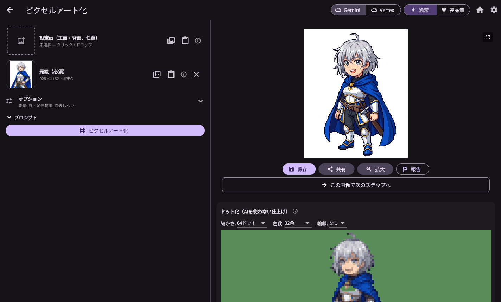
生成結果の下の 「ドット化（AIを使わない仕上げ）」 で、本物のドット絵に描き直せます。AIは使わないので、何度変えても料金や無料版の回数はかかりません。
- 細かさ: キャラの高さのドット数（32 / 48 / 64 / 96 / 128 / 256 / 512）。等身のある絵柄なら 64〜128、デフォルメなら 32〜64 が目安です。512 はほぼ元の絵のままの細かさです
- 色数: 16 / 32 / 64 / 制限なし。少ない色数でも、肌や目など面積の小さい色が残るようにまとめます
- 輪郭: なし／弱／強 から選びます。
- 弱: キャラの外側に、元の色を暗くした1ドットの輪郭を付けます（柔らかい仕上がり）
- 強: 外側の輪郭を黒に近い色にし、元の絵の線（目・髪・服の線など）を消さずに縮めます（ドット絵らしく締まった仕上がり）
- 保存の倍率: 等倍（ドット数そのまま。ゲームエンジン用）か、2 / 4 / 8倍（確認・掲載用。ドットの角はぼかしません）。背景は透明で保存されます
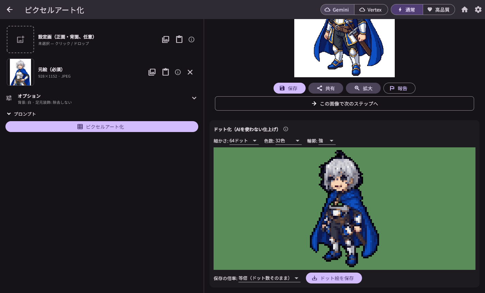
4.4 4方向直立画像
4方向の立ち絵を作ります。マネキン（灰色の人形）をキャラクターとして描き直すので、向きが崩れにくくなっています。
- 設定画を使うか、「正面画像」を入れる。必要なら「背面参照画像（任意）」も入れる
- 「向き」を選ぶ: 斜め4方向（クォータービュー）／正面・左右・背面（ツクール向け）
- 「生成方式」を選ぶ
- 1方向ずつ（4回）: 向きごとに作ります。崩れた向きだけやり直せます。「生成する向き」で一部の向きだけ作ることもできます
- 一括（1回）: 4方向をまとめて作ります。4方向の色が揃います
- 「4方向直立画像を生成」を押す
- 「向きごとの調整」で、向きごとに「やり直す」（追加の指示付き）、「反転で代用」（反対の向きを左右反転して使う。左右対称なキャラ向け）、保存ができます
- 「この4方向を基準画像にして歩行スプライトへ」で、結果を歩行スプライトの基準画像として引き継げます
- 「自動チェック」がオンだと、向き・顔の有無をAIで判定し、不合格なら自動でやり直します（その分の呼び出しが増えます）
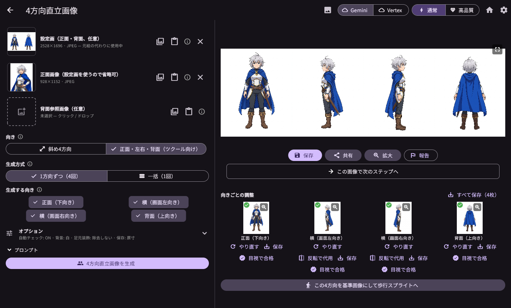
4.5 歩行スプライト
4方向 × 4コマの歩行アニメーションを作ります。
- 設定画を使うか、「元絵」を入れる（設定画を使わないときは「向き別の基準画像」に4方向立ち絵の結果を入れると向きが合いやすくなります）
- 「向き」を選ぶ（4.4 と共通）
- 「生成方式」を選ぶ
- 1コマずつ（16回）: 1コマごとの完成度が最も高く、崩れたコマだけやり直せます
- 1方向ずつ（4回）: 向きごとに4コマをまとめて作ります。その向きの4コマの色が揃います
- 「歩行スプライトを生成」を押す
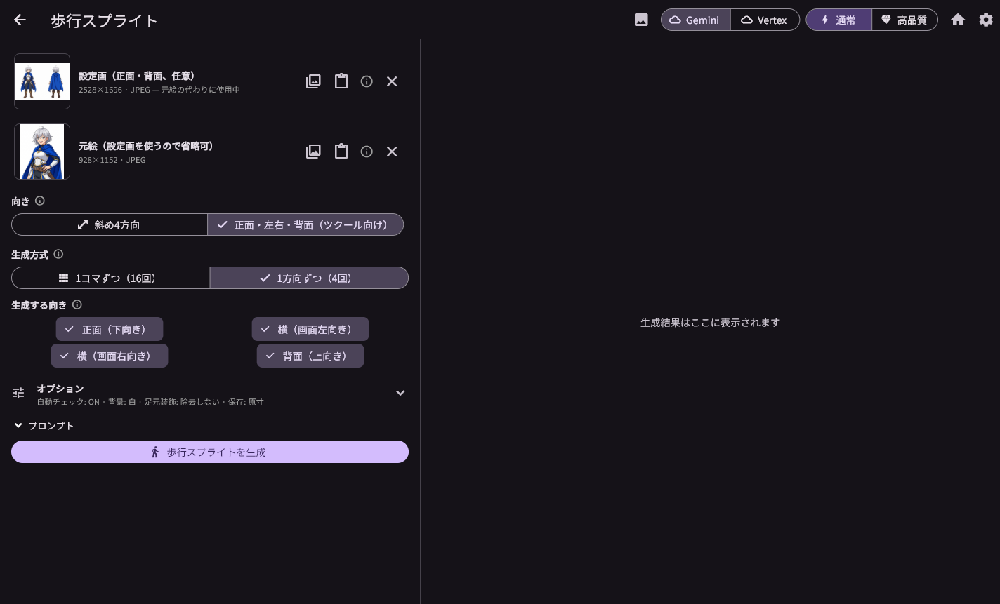
- 「向きごとの調整」「コマごとの一覧」で、向き・コマ単位でやり直せます。コマの一覧では、見本のマネキンと並べて見比べられます
- 「自動チェック」がオンだと、各コマを判定し、不合格のコマだけ自動で作り直します
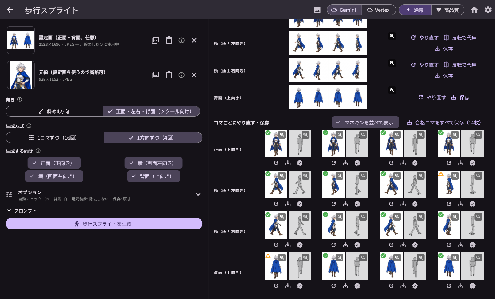
- ツクール形式で書き出し: 向きが「正面・左右・背面」で4方向そろうと、保存ボタンの並びに出ます
- 1コマの大きさ: MV/MZ 標準（48×48）・MV/MZ 縦長（48×64）・VX Ace 標準（32×32）・VX Ace 縦長（32×48）
- 各向きの1〜3コマ目を使い、背景を透明にした横3コマ × 縦4方向の画像を作ります
- 保存時のファイル名は、元絵（または設定画）のファイル名の先頭に
$を付けたものになります。先頭の$は消さないでください（1キャラ用の画像として読み込まれます）
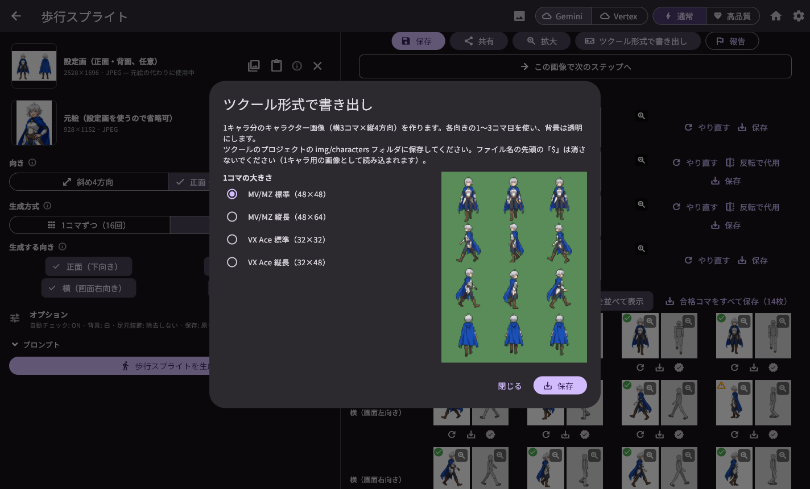
4.6 定型行動スプライト
用意された行動から選んで、4コマの動きを作ります（2×2 に並んだシートになります）。
- 設定画を使うか、「元絵」を入れる
- 行動を選ぶ（7カテゴリ・91種）
- 「定型行動スプライトを生成」を押す
- 気になるコマは「コマごとの調整」で「やり直す」を押し、追加の指示（例: 剣の軌跡のエフェクトを消す）を入れて作り直せます
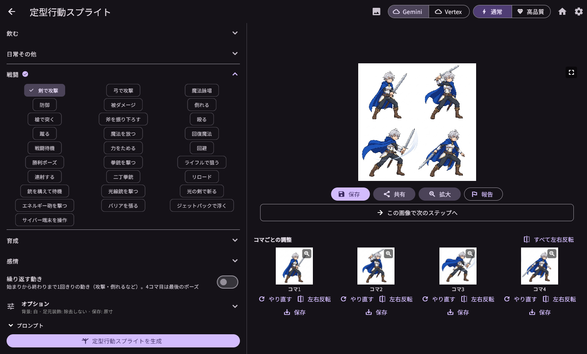
- 繰り返す動き: オンにすると、4コマ目から1コマ目へつながり、くり返し再生できる動きになります（飲む・待機など）。オフにすると始まりから終わりまで1回きりの動きになり、4コマ目が最後のポーズになります（攻撃・倒れるなど）。行動を選ぶと、その行動に合うほうに切り替わります（下の表の＊は1回きりが既定の行動）。変えることもできます
- 行動ごとに4コマの動きの流れ（例: 剣で攻撃 = 構え → 振りかぶる → 振り抜く → 振り終わり）をAIに伝えています
- 行動は画面の左向きで描きます。元絵が右向きのときは、オプションの「反対向きに反転元画像を使う」（自動／元画像は左向き／元画像は右向き／使わない）で、元絵を左右反転して渡し向きを揃えます（設定画を使うときは出ません）
- 「コマごとの調整」の「左右反転」でそのコマだけ、「すべて左右反転」で全コマを反転できます（右向き版を作るとき。AIは使いません）
| カテゴリ | 行動（＊は1回きりが既定） |
|---|---|
| 睡眠 | 睡眠 / ベッドで寝る / 布団で寝る / 居眠り / 寝袋で寝る / 目を覚ます＊ / あくび＊ |
| 食事 | 食事 / 座って食事 / 軽食 / ディナー / おにぎりを食べる / 麺をすする / 骨付き肉にかぶりつく / スープを飲む / 果物をかじる |
| 飲む | コップで飲む / グラスで飲む / ビンで飲む / 盃で飲む / ジョッキで飲む / 樽ジョッキで飲む / 樽で飲む / ティーカップで飲む / 水筒で飲む / ポーションを飲む＊ / ストローで飲む |
| 日常その他 | 会話 / 座る＊ / 手を振る / お辞儀＊ / 拍手 / 指さす＊ / 手招き / ジャンプ＊ / 読書 / ほうきで掃く / ストレッチ |
| 戦闘 | 剣で攻撃＊ / 弓で攻撃＊ / 魔法詠唱 / 防御＊ / 被ダメージ＊ / 倒れる＊ / 槍で突く＊ / 斧を振り下ろす＊ / 殴る＊ / 蹴る＊ / 魔法を放つ＊ / 回復魔法 / 戦闘待機 / 力をためる / 回避＊ / 勝利ポーズ＊ / 拳銃を撃つ＊ / ライフルで狙う＊ / 連射する / 二丁拳銃＊ / リロード＊ / 銃を構えて待機 / 光線銃を撃つ＊ / 光の剣で斬る＊ / エネルギー砲を撃つ＊ / バリアを張る＊ / ジェットパックで浮く / サイバー端末を操作 |
| 育成 | 肉体トレーニング / 知的学習 / 美容トレーニング / 瞑想 / 素振り / 腕立て伏せ / ダンスの練習 / 歌の練習 / 楽器の練習 / 料理の練習 |
| 感情 | 笑う / 泣く / 喜ぶ / 悲しむ / 怒る / 驚く＊ / 照れる / 考え込む / うなずく / 首を横に振る / 困る / ほっとする＊ / 落ち込む / 得意げ / おびえる |
4.7 自由行動スプライト
行動を文章で指定して動きを作ります。
- 設定画を使うか、「元絵」を入れる
- 「行動の説明」を入力（例: 剣を振り下ろす攻撃モーション）
- 「コマ数」（1〜32）と「WAVE数」（1〜10。続く動作を何枚のシートに分けるか）を入れる
- 「自由行動スプライトを生成」を押す
- コマは正方形のマスに並びます（4コマまでは2列、それより多いと4列）
- WAVE ごとに「コマごとの調整」でやり直せます
- 向きの揃え方（反対向きに反転元画像を使う）と、コマの「左右反転」「すべて左右反転」は定型行動と同じです
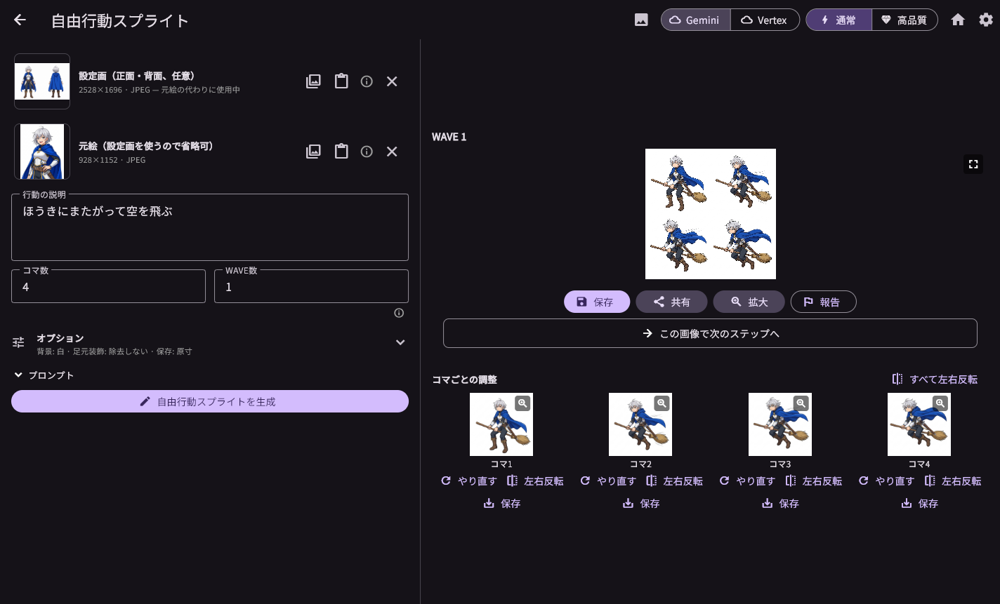
4.8 イベント画像生成
ゲームのイベントCG（スチル）を作ります。キャラクターのポーズをマネキンで指定し、画角・寄り・表情・背景を選びます。
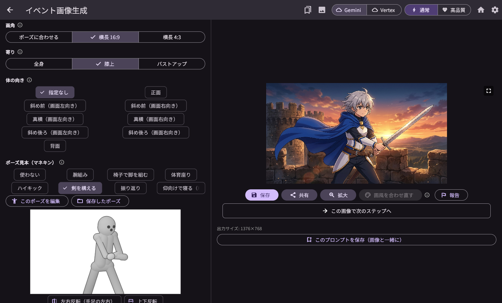
- 画角: 「ポーズに合わせる」（縦長 4:5 / 横長 5:4。マネキンを使わなければ正方形）／横長 16:9（ノベル・ADV向け）／横長 4:3（ツクールMV/MZ の画面 816×624 に近い）
- 寄り: 全身／膝上／バストアップ。マネキンを使うときは、マネキンもその寄りで下端を切って渡すので、プレビューのとおりの構図になります（上下反転したポーズでは全身になります）
- 参考画像: 元絵、または設定画。設定画があるときは「衣装のみ参考にする」で、設定画のキャラクターに元絵の衣装を着せることもできます
- 体の向き: 指定すると、元絵の向きより優先します
- ポーズ見本（マネキン）: プリセットから選ぶか、「ポーズを作る（マネキンを動かす）」で自分で作れます。作ったポーズは保存して再利用できます
- ポーズエディタの「体全体を回す」は、ボタン（15° / 45° / 90° ずつ）でもスライダー（前へ倒す・左へ倒す・左へ回る）でも回せます。スライダーは、つかんだときの姿勢から動かした角度だけ回り、離すと0に戻ります
- マネキンのすぐ下の「全体を表示」「左右を入れ替え」「直立に戻す」「最初に戻す」で、表示や姿勢を元に戻せます
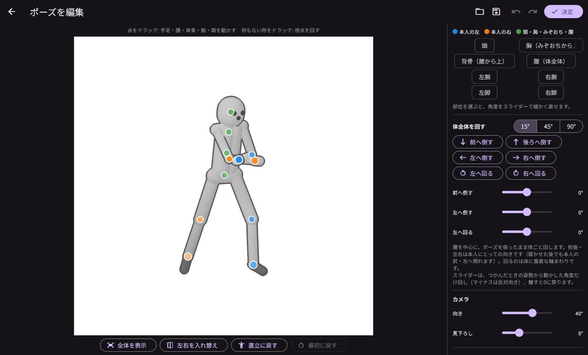
- ポーズの説明・表情・追加プロンプト: 選択肢から選ぶか自由に入力します
- 背景: 「単色背景」か「シチュエーション（場面）を描写」を選びます
- 解像度: 標準 / 2K / 4K
- 生成後、「このプロンプトを保存（画像と一緒に）」で、設定を「保存したプロンプト」から呼び出せます
- 「画風見本」を指定していれば、「画風を合わせ直す」で結果を見本の画風に描き直せます
4.9 分割・透明化（AIなし）
スプライトシートをコマに分け、背景を透明にします。
- 「スプライトシート（必須）」を入れる
- 「列数」「行数」を入れ、必要ならグリッド線をドラッグして分割位置を調整する（列数・行数は次に開いたときも残ります）
- 透明化の設定を選ぶ
- 透明化対象色: 生成時の背景色（白・マゼンタ・緑など）に合わせます。「画像から拾う」で画像をクリックして選べます
- 許容範囲（0〜80）: 大きいほど背景色に近い色も透明になります（大きすぎるとキャラの薄い色も消えます）。0 は透明にする色と完全に同じ色だけを抜き、縁のなめらか処理もしません（自分で描いたドット絵など向け）
- 周辺のみ透明化: 画像の端から繋がった背景だけを消し、内側の白は残します
- エッジスムーシング: キャラの縁に混ざった背景色（白でもマゼンタ・緑でも）を取り除き、縁を半透明にしてなめらかにします。縁の数ドットに残る背景色の照り返しも抑えます
- トリミング: 透明部分を切り詰めます
- 「分割実行」を押す。コマごと・まとめての保存、左右反転したコピーの保存ができます
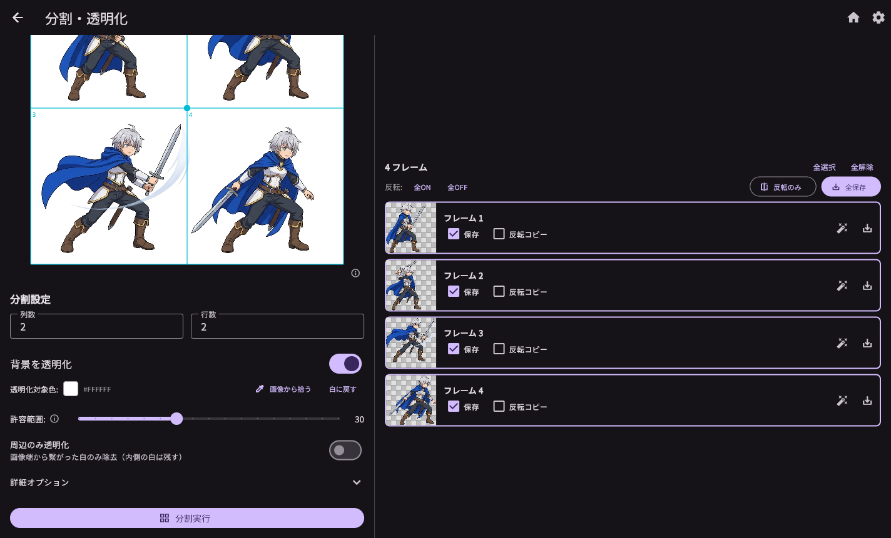
手直し（抜く・戻す）
自動の透明化で残った背景（腕と体の間の隙間など）や、背景といっしょに消えたキャラの白い部分（白い服や鎧など）は、コマをクリックするか、コマの右の杖のボタン（残った背景を抜く・欠けた所を戻す）で開く拡大画面で直せます。
- 上のボタンで「抜く」（透明にする）か「戻す」（元の色に戻す）を選ぶ（「見る」はドラッグで画面を動かすだけ）
- 範囲を選ぶ
- つながり: タップした色につながった範囲
- 同じ色を全部: タップした色と同じ色を、離れた所も含めて画像全体から
- 1ドット: タップ・なぞった画素だけ（周りや縁には手を付けません。なぞった分は1回の手直しとして取り消せます）
- 必要なら許容範囲（タップした色からどれだけ違う色まで含めるか。0 は完全に同じ色だけ）を変えて、直したい所をタップする
- 縁の混ざった色をタップしても、透明化対象色に近ければ自動の透明化と同じ基準で範囲を決めるので、隣の明るい服や輪郭線の向こうのハイライトまでは抜けません
- マウスを載せている画素に枠が出ます。ホイールで拡大できます
- 確認用の背景（市松・マゼンタ・緑・青・黒・白）を選べます。鮮やかな色の上に置くと、抜き残しや半透明の縁、欠けた所が見つけやすくなります
- 手直しをしたコマには「手直し N」と表示されます。手直しは、同じ枚数で分割し直しても残ります
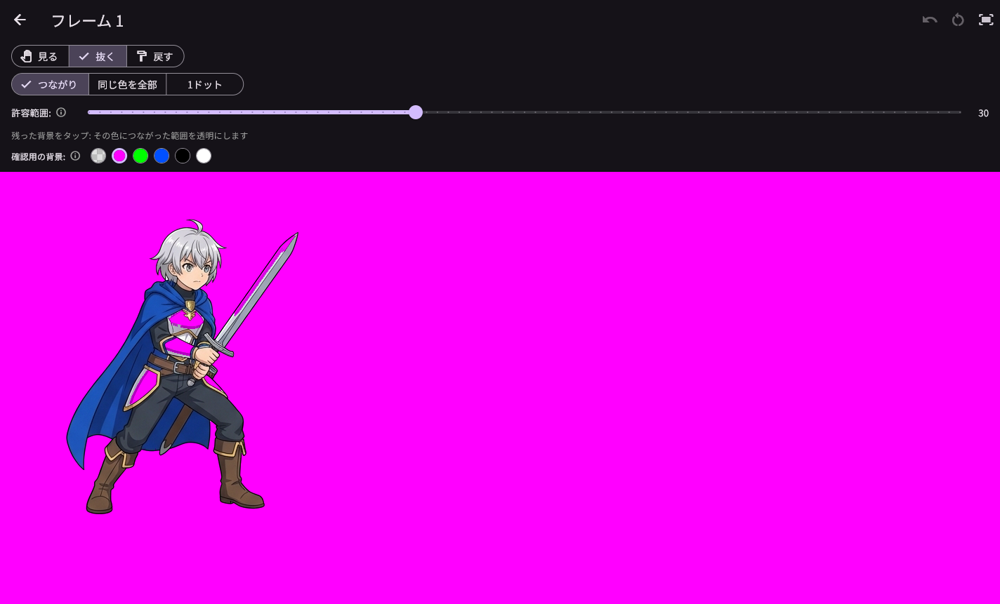
4.10 ツクール形式に変換（AIなし）
保存済みの歩行シートを、ツクールMV/MZ・VX Ace の1キャラ用キャラクター画像（横3コマ × 縦4方向）に変換します。
- 「歩行シート（4行）」を入れる。シートは上から 正面（下向き）・左向き・右向き・背面（上向き） の順に並んでいる必要があります（歩行スプライトを「正面・左右・背面」で作ったシートはこの並びです）
- 1行のコマ数は画像から自動で判定されます。シートの上に分け方の赤い線が出るので、1マスに1体ずつ入っているか確認してください（判定できないときだけ、コマ数を選ぶ欄が出ます）
- 「ツクール形式で書き出し」を押し、1コマの大きさを選んで保存する（4.5 と同じ画面です）
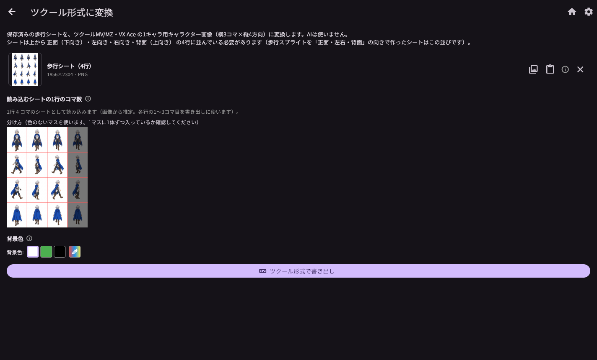
- 背景色は画像の端から塗りつぶして透明にします。キャラクターに囲まれた背景（髪の輪の中など）も、背景とほぼ同じ色なら透明になります
- 保存時のファイル名は、読み込んだシートのファイル名の先頭に
$を付けたものになります
5. どの画面にもある設定
5.1 スタイル（画風）
画面右上のスタイルボタンで切り替えます。選んだスタイルはアプリ全体に保存されます。
- デフォルメ（既定）: 2〜3頭身のかわいい絵柄
- ベース画像踏襲: 元絵の画風をそのまま使う
- ドット絵（等身維持）: 頭身を保ったドット絵
- アニメ調
- ドット絵で描く: オンにすると、選んだスタイルをドット絵で描きます
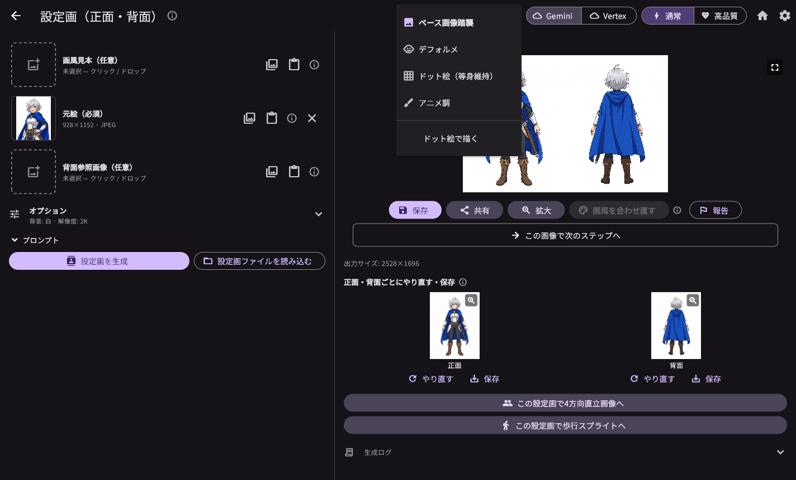
5.2 オプション
各画面の「オプション」を開くと設定できます。
- 背景色: 白・緑・黒、または任意の色。透明にしたいときは、キャラクターに使われていない色を選ぶと抜きやすくなります
- 足元の装飾を除去: 影・グリッド・床を描かせません
- 保存サイズ（1コマ）: 保存するときに1コマがこの高さになるよう縮小して保存します（原寸 / 640 / 320 / 160）。画面の表示や次の機能へ渡す画像は、生成されたままの大きさです
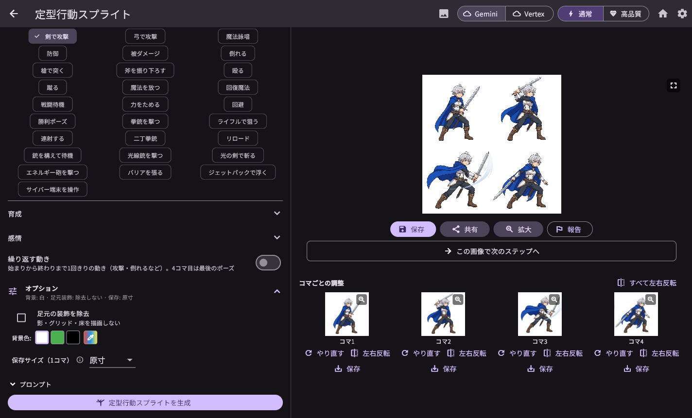
5.3 プロンプトの確認・編集（製品版のみ）
各画面の「▼ プロンプト」を開くと、AIに送る指示文を確認・編集できます。編集すると「（カスタム）」と表示され、「リセット」で元に戻せます。スタイルを変えると自動で元に戻ります。
5.4 やり直しの追加の指示
「やり直す」を押すと、追加の指示を入力できます（空欄なら通常どおり作り直します）。色・小物・顔の有無など見た目の修正に向いています。歩行の足の前後や向きはマネキンで決まるため、指示では変わりにくいです。
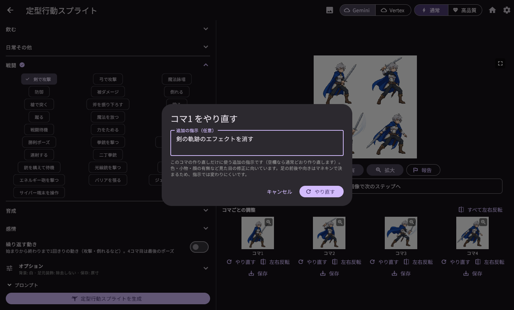
5.5 拡大表示での見比べ
コマ・向きのサムネイルをダブルクリックすると拡大表示になり、←→キーで前後のコマに移りながら、そのまま作り直せます。
5.6 画風見本
設定画とイベント画像の画面で、画風（線・塗り・陰影）を揃えたい画像を「画風見本」として指定できます。キャラクターの見た目と色は設定画・元絵から取ります。見本はアプリを閉じても残ります。
6. 設定画面
| 項目 | 内容 |
|---|---|
| 接続先 | Gemini API (AI Studio) / Vertex AI (GCP) |
| APIキー・ベースURL・モデル名 | Gemini API の設定（通常はAPIキーだけ入れれば使えます） |
| プロジェクトID・リージョン・サービスアカウントJSON | Vertex AI の設定（Google Cloud のサービスアカウントが必要。上級者向け） |
| 高品質モデル名（任意） | 「高品質」スイッチをオンにしたときに使うモデル |
| チェック用モデル名（任意） | 自動チェックに使うモデル（空欄なら生成用モデル） |
| 保存先フォルダ | 生成画像の保存先（未設定時: ピクチャ\CharaRig）。「フォルダを開く」で開けます |
| スプライトスタイル・ドット絵で描く | 5.1 と同じ |
| 参照タイル画像 | クォータービューの角度の基準にするタイル画像（全生成に使います。4方向・歩行の向きが「正面・左右・背面」のときは使いません） |
| 利用上の注意 | 初回起動時の注意事項 |
| 不適切な生成の報告 | 報告フォームを開きます |
変更したら右上の「保存」を押してください。
7. 無料版について
無料版は、購入前に品質を確かめるための版です。ウィンドウとホーム画面のタイトルに「無料版」と表示されます。
- AIを使う操作は通算10回まで試せます（生成・やり直し・画風の合わせ直しなど、1回の操作ごとに1回分）。残り回数はホーム画面の先頭に表示されます
- 失敗した操作も1回と数えます。ただし、安全のための仕組み（8.1）で止まり、画像が1枚もできなかった操作は数えません
- 分割・透明化、ツクール形式に変換は、回数の制限なく使えます
- プロンプトの確認・編集欄は表示されません
- 生成は、ご自身のAPIキーで行います（Google の料金はご自身の契約に従います）
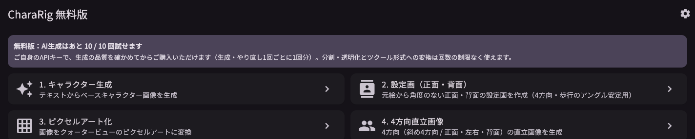
8. 安全のための仕組みと報告
8.1 生成の前後の安全チェック
- 送る前に、明らかに不適切な表現が含まれていないかをアプリが確認します。含まれていると「利用できない表現が含まれています。内容を変更してください。」と表示され、送信されません
- Google 側の安全フィルタで止められた場合は「安全フィルタにより生成されませんでした。表現を変えてお試しください。」と表示されます。自動のやり直しは行いません
- 同じ内容で何度も試すと、APIキーやGoogleアカウントの制限につながることがあります。表現を変えてください
8.2 不適切な結果の報告
生成結果の「報告」（または設定画面の「不適切な生成の報告」）を押すと、ブラウザで報告フォームが開きます。機能名・モデル名・アプリのバージョンは自動で入ります。製品版では「プロンプトをコピー」でプロンプトをフォームに貼り付けられます。画像は送られません。
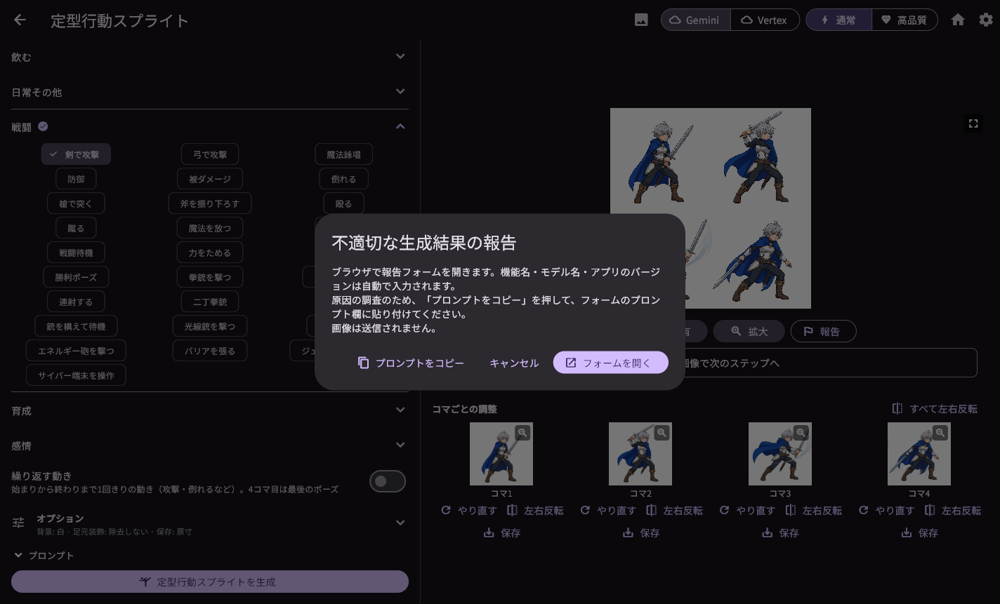
9. 困ったときは
| 症状 | 対処 |
|---|---|
| 起動時に「WindowsによってPCが保護されました」と出る | 「詳細情報」→「実行」で起動できます（別紙「起動時の警告への案内」） |
| 「APIキーが設定されていません」 | 設定画面でAPIキーを入れて「保存」 |
| 「APIキーが無効か、アクセス権限がありません」 | 設定画面でAPIキーを確認してください（前後の空白などがないか） |
| 「リクエスト制限に達しました」 | 利用量の上限（無料枠など）に達しました。しばらく待ってから試すか、有料枠を検討してください |
| 「サーバーエラーが発生しました」 | Google 側の一時的なエラーです。しばらく待ってから試してください |
| 「リクエストが不正です」 | 指定した解像度や画像がモデルに合わない可能性があります。解像度を「標準」に戻す・画像を変えるなどして試してください |
| 「エンドポイントまたはモデルが見つかりません」（Vertex AI） | リージョンを「global」にしてみてください |
| 「エラーが発生しました: …」（SocketException など） | インターネット接続を確認してください |
| 「利用できない表現が含まれています」 | 説明文・追加の指示から不適切と取られる表現を外してください |
| 「安全フィルタにより生成されませんでした」 | 表現を変えて試してください（露出の多い衣装などで起きることがあります） |
| 「画像を生成できませんでした」 | 説明やプロンプトを変えて、もう一度試してください |
| 向きや足の前後が崩れる | 設定画を作って使う／生成方式を「1コマずつ」にする／崩れたコマだけ「やり直す」 |
| コマが隣のコマにはみ出す（行動） | 「コマごとの調整」で、はみ出したコマを指示付きでやり直す（例: エフェクトを消す） |
| 分割・透明化で背景の白が残る／キャラの白い部分まで消える | コマをクリックして拡大し、「抜く」「戻す」で手直ししてください（4.9） |
| ツクールで1マスに複数のキャラが表示される | 「ツクール形式に変換」の赤い線で、1マスに1体ずつ入っているか確認してください |
| 2K・4K を選んでも小さい画像が返る | 使っているモデルが対応していない可能性があります（Vertex AI の一部のモデルなど） |
| 無料版で「AI生成（10回）を使い切りました」 | 製品版をご購入ください。分割・透明化とツクール形式への変換は引き続き使えます |
設定やログは ドキュメント\CharaRig フォルダにあります（自動チェックのログ: logs\check_log.txt）。
付録. APIキーの取得
CharaRig で画像を生成するには、Google の APIキーが必要です。取得は無料で、約5分で終わります。
APIキーとは
Google の画像生成AI（Gemini）を使うための「あなた専用の鍵」です。
- CharaRig はこの鍵を使って、あなたの Google アカウントから直接画像を生成します
- 生成の回数や料金（有料枠を使う場合）は、すべてあなたと Google の間で完結します
- 開発者が、あなたの鍵や生成した内容を見ることはありません
取得の手順
- ブラウザで https://aistudio.google.com/apikey を開き、Google アカウントでログインします
- 「APIキーを作成」（Create API key）を押します。プロジェクトの選択を求められたら、新しく作るか、そのまま進みます
AIzaで始まる文字列が表示されます。これがあなたの APIキーです。コピーボタンでコピーします- CharaRig を起動し、右上の ⚙️（設定）を開きます
- 「接続先」が Gemini API (AI Studio) になっていることを確かめ、「APIキー」欄に貼り付けて、右上の「保存」を押します
これで、ホーム画面から各機能が使えるようになります（設定画面は 1.2 の画像も参照）。
無料枠と有料枠
| 無料枠（最初はこちら） | 有料枠 | |
|---|---|---|
| 料金 | 0円 | 生成1枚あたり数円〜十数円程度 |
| 制限 | 1日・1分あたりの生成回数に上限があります。混み合うと「リクエスト制限に達しました」が出やすくなります | 上限が大きく緩和されます |
| 送ったデータの扱い | 送ったプロンプトと画像が Google の AI の改善に使われ、人が確認することがあります | 学習には使われません |
- まずは無料枠で十分です。 本格的に作るようになったら、Google AI Studio の課金設定（Billing）から有料枠に切り替えられます
- 有料枠でも、キャラクター1体ぶんの素材一式で 数十円〜百円程度 が目安です（作り直しの回数や解像度で変わります）
- 無料枠で、他人の顔写真など扱いに注意が必要な画像を使うのは避けてください（上のとおり Google に送られ、使われるため）
- 欧州経済領域（EEA）・英国・スイスでは、無料枠が使えません（有料枠のみ）
注意
- APIキーは他人に教えないでください。 キーを知っている人は、あなたの枠（有料枠なら料金）で生成できてしまいます。SNS やスクリーンショットでの公開にも気をつけてください
- キーが漏れたときは、Google AI Studio でそのキーを削除し、新しいキーを作ってください
- 性的・暴力的・差別的な画像や、実在の人物を偽る画像の生成は、Google のポリシーで禁止されています。違反する生成を繰り返すと、あなたの APIキーや Google アカウントが制限されることがあります
うまくいかないとき
| 症状 | 対処 |
|---|---|
| 「APIキーが無効か、アクセス権限がありません」 | キーの前後に余分な空白が入っていないか確かめ、キー全体（AIza〜）をコピーし直してください |
| 「リクエスト制限に達しました」 | 無料枠の上限です。数分〜翌日まで待つか、有料枠への切り替えを検討してください |
| 「エラーが発生しました: …」（SocketException など） | インターネット接続を確かめてください |
| 「安全フィルタにより生成されませんでした」 | Google の安全フィルタによるものです。表現を変えて試してください |
解決しないときは、makeai.estake@gmail.com までご連絡ください。